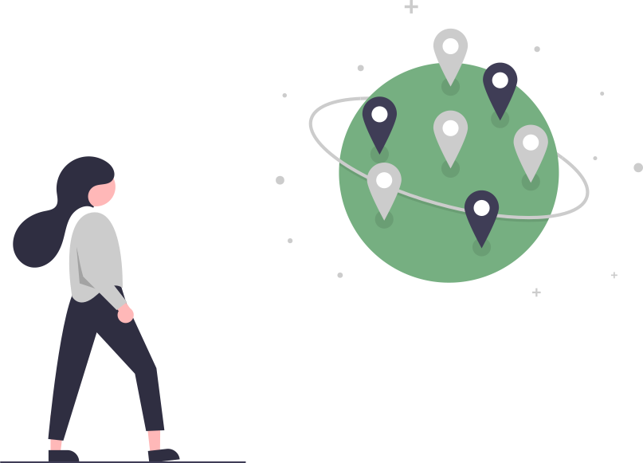

Currently Accepting Tech Donations:
ecoATM
Get Well Gamer Foundation
Ronald McDonald House Charities
Staples stores
Women's and Homeless Shelters
Orphanages and Foster Care Facilities
GiftMyPC
GoodWill
Cell Phones for Soldiers
National Coalition Against Domestic Violence
